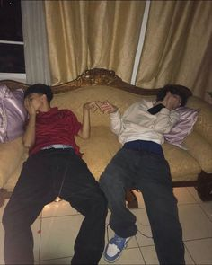
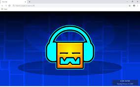

Hola, somos Efrain Hernandez y Saul Hernandez somos los desarrolladores de este sitio web,
"Somos unas persona extrovertidas y sociables que disfrutamos interactuar con los demás.
Nos gusta conocer gente nueva, establecer conexiones y compartir experiencias. Disfrutamos de conversaciones animadas, eventos sociales y actividades en grupo.
Para nosotros, las relaciones. personales son importantes y valoro la amistad y el compañerismo." y capaces de hacer cosas muy grandes
si nos proponemos.

INICIO
"¡Bienvenidos a nuestro apasionante mundo de Geometry Dash! Estamos encantados de tenerte aquí.
Explora y descubre todo lo que tenemos para ofrecerte sobre el encantador juego de GEOMETRY DASH.
¡Gracias por visitarnos!"
En este espacio dedicado a uno de los juegos más desafiantes y emocionantes, encontrarás todo lo que necesitas para sumergirte en la geometría y la música frenética de este adictivo juego.
Desde consejos y trucos para superar los niveles más difíciles, hasta las últimas noticias y actualizaciones del juego, estamos aquí para acompañarte en tu aventura por los mundos geométricos de Geometry Dash.
Prepárate para poner a prueba tus habilidades, desafiar tus límites y disfrutar de la adrenalina que solo este juego puede. ¡Explora, juega y diviértete al máximo en nuestro sitio web dedicado a todos los amantes de Geometry Dash!
SINOPSIS
Salta y vuela el camino a través del peligro en este juego de plataformas de acción basado en el ritmo!Prepárese para un reto casi imposible en el mundo de Geometry Dash. Empuje sus habilidades al límite a medida que salta, vuela y llega al final de su camino a través de pasajes peligrosos y obstáculos puntiagudos.
Geometry Dash es un videojuego «indie» (independiente) desarrollado por Robert Topala (RobTop), el objetivo principal del juego es completar los 21 distintos niveles compuestos por obstáculos (cuadrados y triángulos representados en bloques y pinchos) y otras distintas cosas que impedirán tu paso por el nivel. Cada nivel está representado por una canción distinta, y la mayoría suele tener efectos que hacen que la música concuerde de acuerdo con los obstáculos.
CARACTERISTICAS
* Un Editor de niveles, donde se puede crear un propio nivel y compartirlo.
* Descargar niveles de otros usuarios y completar Map Packs y Gauntlets para conseguir distintos logros y recolectar distintos elementos como monedas de usuario, diamantes, orbes de maná, entre otros.
* Un kit de iconos para probar diferentes combinaciones.
* Una cuenta de usuario para tener un respaldo de tus datos y permitir compartir tus estadísticas y sitios web externos con los demás usuarios.
* Everyplay, para grabar cuando juegues y luego compartir ese vídeo con otras personas.
RECEPCION Y CRITICAS

Geometry Dash es considerado como «uno de los mejores videojuegos para dispositivos móviles (2014-2015, por el momento)» de los últimos tiempos (desde la salida de la 1.8), además que se ha vuelto muy famoso por la gran cantidad de vídeos en YouTube relacionados con este videojuego.
Varias marcas y productos han dejado buenas críticas sobre este videojuego.
La valoración general de PlayStore, igual que la de AppStore, se basa en lo que opina la gente, la gente que ha descargado este producto puede opinar y votar una calificación de 1.0-5.0.
Actualmente Geometry Dash tiene una valoración de 4.8, basado en un total de mas de 309.266 personas, (Por el momento hace competencia con el famoso juego Sandbox Minecraft).
La valoración es muy parecida a la de PlayStore, con la única excepción de que en esta toma en cuenta las estrellas valoradas (de 1 a 5) en vez de tomar el número de voto.
En esta versión de Geometry Dash en iOs su valoración es de 5 estrellas, tomando un poco mas de 1000 valoraciones (en todas las versiones)
La valoración en esta plataforma de PC es muy parecida a la de AppStore, con la única diferencia de que las estrellas de valoración son de 1 a 10 (no como en Appstore que es de 1 a 5).
La valoración tomada por los usuarios son extremadamente positivos con un 97% de votos positivos, por lo que su valoración es de 10 Estrellas.
CURIOSIDADES
* El nivel «Ultimate Destruction» no estuvo disponible, ya que RobTop dijo que era un nivel de prueba, es decir, para mostrar como sería el juego.
* El nombre original de la BETA deGeometry Dash era Geometry Jump(«Salto Geométrico»).
* Una versión de Steam está disponible desde el 22 de Diciembre del 2014.
* Geometry Dash comparte similitud conThe Impossible Game, tanto en el juego, como en la forma de poder jugar, solo que Geometry Dash tiene más características.
* Se dice que el juego está basado en Super Mario Bros, ya que en la 2.0 se incluye como icono el champiñón de Mario Bros, un icono de Shy-Guy e incluso la nueva textura de bloques tiene una similitud con las de Super Mario World. Sin embargo, otros dicen que solo esa actualización está basada en ese juego.
* En la actualización 2.0 para desbloquear los niveles Demon, se restaron 10 monedas menos a cada uno
* Antiguamente se necesitaban 20 y 30 monedas secretas para desbloquear Clubstep yTheory of Everything 2 respectivamente.
* La actualización que más tardó en salir fue la actualización 2.1, la versión actual que tardó aproximadamente 16 meses en salir desde el inicio del proyecto.
* Algunas de las canciones de Geometry Dash ya había salido para otro juego como es el caso de la canción Jumper que ya había salido para otro juego llamado Castle Crasher.
* Diversos creadores de juegos «indie» buscan utilizar las canciones de este juego para «volver más popular» el suyo, la mayoría sin éxito alguno.
* Letrero que aparece al elegir las texturas al máximo.
* Varios niveles del juego cambiaron su dificultad a partir de laactualización 1.7.
* Actualmente la opción de gráficos High está deshabilitada, curioso porque según RobTop las últimas horas antes de salir la más reciente actualización, él estaba colocando en máxima calidad las texturas.
NIVELES
Existen por el momento 21 niveles oficiales de Geometry Dash, cualquier nivel es posible jugar en el modo normal, que tiene que ser completado hasta el final sin chocar, o el modo práctica, que ofrece la opción de marcar puntos de guardado a lo largo del camino. Se pueden recoger las monedas del nivel que te dan distintos logros, además al completar el nivel obtienes su respectiva cantidad de estrellas, las monedas (si las cogiste) y un logro.


.webp) Normal
Normal.webp) Dificil
Dificil.webp) Muy dificil
Muy dificil.webp) Insano
Insano.webp) Demoniaco
Demoniaco